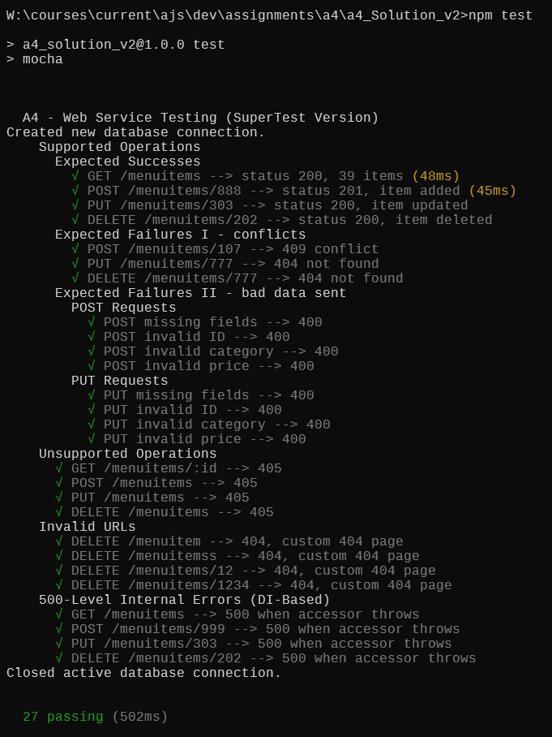

A4 - Web Application with Express
You may work on this assignment in pairs (groups of 2).
Overview
- Create a web application that performs CRUD operations on a database by
making REST-style requests to a web service API.
- Use Node, Mongo, and Express for the back end of the application.
The Back End
Using Express, write a web server that performs two main functions:
- Handles regular, static file requests by sending the requested content, or a
404 page if the content cannot be found.
- Supports a REST-based API for CRUD operations on the database. The API
should:
- use a base URL of
/menuitems
- use the standard HTTP verbs to indicate the four CRUD operations
- use instances of the MenuItem class to validate incoming data (for POST
and PUT) requests
- send responses with appropriate HTTP status codes, as follows:
- 200 - a successful GET, DELETE, or PUT operation
- 201 - a successful POST operation
- 400 - a POST or PUT request with a payload that is invalid within this
web service (e.g., a numeric value that is outside an acceptable
range)
- 404 - a PUT or DELETE request where the relevant entity does not exist
- 405 - an unsupported operation (e.g., a bulk DELETE request; e.g., an
unknown command)
- 409 - a POST request where the relevant entity already exists (and so
cannot be created)
- 500 - a critical server-side error (e.g., database unavailable)
The Front End
- Write a web user interface that displays the database records and allows the
user to perform CRUD operations.
- The UI should keep the user well informed about what is happening in the
application. It should confirm successful operations and explain
unsuccessful ones.
- Remember that the user is not a programmer and has no knowledge of the
technology being used on the back end. Therefore, messages displayed to the
user should not be technical in nature. For example, do not display a
Mongo-generated error message or code; instead, explain in general terms
what the problem is and, if applicable, how to fix it.
Starter Code
-
After unzipping the starter code, run the command npm install to install
the project dependencies.
-
The following modules/classes are provided and should not be changed.
New Code to Write
-
The back end Express application. You given a starter version of app.mjs.
Note that it contains a function called, buildApp. You should write your
code inside this function.
-
The front end web page, together with any supporting CSS or JS files. Place
all of these files in the public folder so that the static file handling
will be able to serve them to the browser.
Testing
General
The most important thing in any web application is that the web server keeps
running. No matter what you throw at it, the server should never crash.
Back End
A complete Mocha test suite is provided. To run the tests, enter the command
npm test.

Front End (GUI)
In addition to the back end testing (npm test), you must test the
GUI thoroughly and verify that:
-
Normal CRUD operations work end-to-end from the GUI.
- You can create, read, update, and delete menu items through the interface.
- After each action, reload the page to confirm the change was saved to the
database. (Do NOT use
npm test to check persistence because the test
suite resets the database.)
-
A 404 page is displayed when a non-existent resource is requested.
- Manually enter an invalid URL (for example, /menuitems/9999 or an
incorrect path).
- Confirm that your custom 404 page is displayed, not an Express error or a
blank page.
-
Helpful error messages appear when the server rejects invalid data.
- Trigger at least one 400-level error (for example, send invalid price or
missing fields).
- The GUI must:
- show a clear error message (popup or inline)
- not silently fail
- not leave the user stuck with no feedback.
All GUI behaviour must be demonstrated using the live server and real database
-- no hard-coded lists or simulated data.
What to Hand In
- Your entire project folder, zipped. (You may delete the "node_modules"
folder before zipping.)
- A screen-shot showing the back end test results in a command window.
- A video showing the front end testing outlined above.